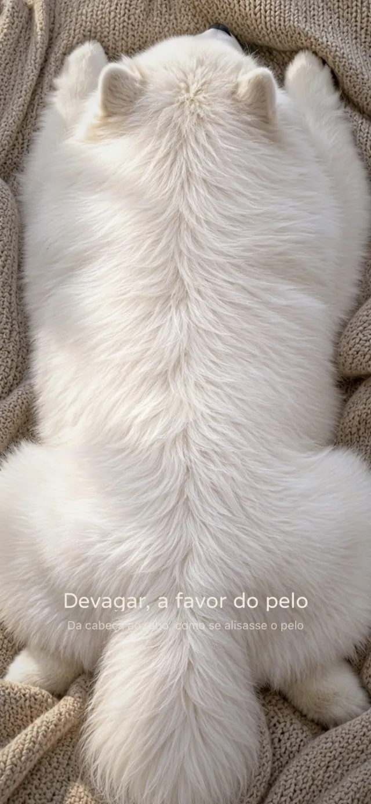
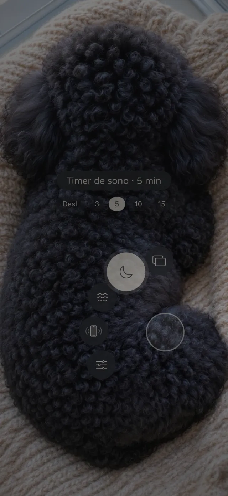
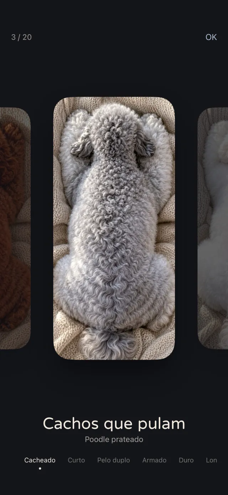

Um app calmante para iPhone, para a hora de dormir
Acaricie um cachorro dormindo
e desacelere.
Passe o dedo devagar a favor do pelo. O pelo se inclina sob o dedo e volta ao lugar quando você solta. Conforme você continua, a respiração do cachorro fica mais lenta até ele dormir profundamente.
Baixar na App Store- ✓ 20 cachorros, 7 tipos de pelo
- ✓ Sem pontuação, tarefas ou alimentação
- ✓ Não precisa de conta

Toque
O pelo se move de verdade
Passe o dedo a favor do pelo e ele se deita na direção do dedo, depois volta devagar ao lugar. Passando contra o pelo, ele fica arrepiado por um tempo antes de assentar. Pelos cacheados balançam, pelos longos acompanham a mão com um pequeno atraso e pelos curtos continuam lisos.
Menu
Deixe o dedo parado e o menu abre ao lado do polegar
Enquanto você acaricia, não há nada na tela. Para trocar de cachorro ou definir o timer, mantenha o dedo parado por 0,8 segundo. Cinco botões se abrem ao lado do polegar. Deslize até um deles sem levantar o dedo e solte.

Cachorros
20 cachorros, para conhecer um de cada vez
O poodle preto, o cachorro de pelo curto cor de café com leite, o Shiba Inu, o Samoieda e o golden retriever são gratuitos. Os outros 15 são para membros. Você pode experimentar um deles por 20 segundos ou assistir a um anúncio para acariciá-lo durante o dia.

Hora de dormir
Quando o cachorro adormece, você também está perto de dormir
Depois de cerca de um minuto de carinho lento, o cachorro dorme profundamente e a tela escurece. Com o timer de sono ativado, a respiração vai sumindo e a tela fica preta quando o tempo acaba. Toque uma vez para voltar.
▲ Nenhum botão na tela enquanto você acaricia.
Indicado para
- Deitado na cama antes de dormir
- Quando a mente não se acalma
- Esperando o ônibus ou em uma fila
- Quando sente falta do seu cachorro
Detalhes
| Cachorros | 20 (5 gratuitos) |
|---|---|
| Pelo | 7 tipos: cacheado, curto, dupla camada, armado, áspero, longo, sedoso |
| Som | Apenas uma respiração bem suave, que pode ser desativada |
| Vibração | Um leve toque ocasional quando o cachorro reage, que pode ser desativado |
| Conta | Não é necessária |
| Preço | Gratuito com anúncios; a adesão de membro é uma compra única |
| Requisitos | iPhone com iOS 17 ou posterior |
Os anúncios aparecem somente na parte de baixo da tela de escolha de cachorro e das configurações. A tela de carinho nunca mostra anúncios.
Gratuito
- 5 cachorros
- Timer de sono, som de respiração e vibração
- Anúncios na parte de baixo da tela de escolha de cachorro e das configurações
- Assista a um anúncio para acariciar um cachorro bloqueado durante o dia
Membro (compra única)
- Todos os 20 cachorros
- Sem anúncios
- Cachorros adicionados depois estão incluídos
- Restaure a compra em um novo celular com a mesma conta Apple